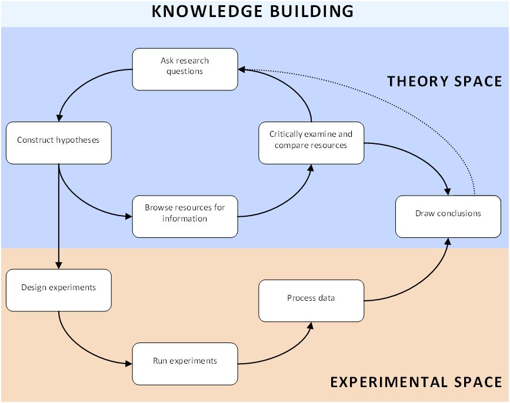

Becoming an expert Browse resources for information Critically examine and compare resources Ask research questions Construct hypothesis Design experiments Run experiments Process data Draw conclusions
You are now a member of an expert group. The following lessons your goal is to become an expert in a particular field of knowledge. But how do you become an expert? How do you ‘build’ knowledge? Of course you are familiar with search engines such as Google, which you use to find information on the internet. But most of the knowledge you find on the internet and in books, was originally produced by ‘people who did some kind of research and wrote about it’. So, in addition to studying existing resources, we also want you to carry out experiments yourself, and thus create ‘new knowledge’. Just like real scientists do.
The steps that you will follow in the process of becoming an expert are depicted in the diagram below.
As you can see, there are multiple pathways through the diagram. Basically, there are two main routes. One route runs in ‘theory space’, in which you may recognize the process of studying existing resources described above. The other route flows from ‘theory space’ to ‘experimental space’ and back. So if you do experiments, you have to follow this route. Complicated as it may seem at first sight, once you start working, you will find that each activity follows more or less logically from the previous one. Each step will be explained in detail in this document.

How to divide the work
Following these steps, your expert group builds up a lot of knowledge on certain aspects of CO2-friendly building. Later on, each of you will be using this knowledge for the benefit of your own design group. But for now you have to operate as a team. It might be wise to divide tasks between the members of your expert group. But by the end of the expert phase, all findings must have been shared, so that each member has acquired more or less the same knowledge and skills.
What must be delivered
Scientists often share the outcome of their research in a written report. Instead of writing a report, your expert group will deliver two ‘products’ that more or less serve the same purpose as a report:
Where to start
But first you have to become an expert. It is often a good idea to start with doing some background reading and study existing resources on your subject. After you have become acquainted with the most important terms and concepts in your field of knowledge, it is time to formulate a couple of research questions. If your question can be answered experimentally, the next sequence of steps will guide you through the process of designing and running experiments, and drawing conclusions from them. When needed, ask your teacher for feedback.
1. Browse resources for information
You have been assigned a specific expert role: energy expert, insulation expert or electricity expert. Now you have to do some background reading, to find out what concepts and phenomena are important in your particular field of knowledge. Maybe you already have a lot of experience doing this kind of ‘research’. Nevertheless, the following guidelines might help you to collect the right information:
2. Critically examine and compare resources
Having found a number of resources with the appropriate information, you need to collect and organize your findings in an efficient way. It might help you to follow these guidelines:
Now that you are more or less familiar with the most important concepts and factors in your expert domain, it is time to construct a couple of research questions. A research question precisely describes something that you want to find out. But what is a ‘good’ research question? Formulating research questions can be quite difficult if you have never done it before. Here are some guidelines that will help you:
Start your expert research by formulating three research questions (for the whole group). Additional questions will be added later on.
In the previous step, you have formulated a number of research questions. Maybe you already have some ideas or expectations about the answers to your questions. These ‘expectations’ are your hypotheses. The goal of this step is to formulate a hypothesis for each research question.
What is a ‘good’ hypothesis? Here are some guidelines:
Now that you have formulated a couple of research questions and hypotheses, it is time to start thinking about the practical work. If possible, try to involve doing real experiments in the classroom or at home, or doing virtual experiments with the house simulation tool. In some cases, it is not possible to carry out experiments yourself (e.g. you cannot explore the efficiency of nuclear power plants in the science lab of your school). Then you have to go back to step 1 of the inquiry cycle and turn to websites, books and other resources to answer your question.
Before you actually start performing your experiments, you have to describe what you plan to do. In other words, you have to write an experimental procedure. An experimental procedure is a detailed, step-by-step description of an experiment. Even when you plan to execute the experiment yourself, your experimental procedure has to be precise and clear. Another person should have enough information to perform the experiment in the same way.
An experimental procedure is composed of an organized list of tasks that have to be carried out. All instructions must specify the materials that have to be used, and all parameters that define the task that has to be done (e.g. the quantities of substances, the input parameters of a device, etc.).
Example of a task (materials and parameters are underlined):
Measure 50 mL of solution S with a 50 mL pipette.
Because the nature of the experiments that you are going to perform, varies from group to group, and from question to question, it is not possible to set specific rules for the design of your experiments. Nevertheless, refer to the following checklist to evaluate your experimental procedure:
The experimental procedure is precise and clear.
The experimental procedure is realistic.
The experiment is safe.
The experiment is consistent with your research questions and hypotheses.
The experiment is consistent with the scientific method.
Now it is time to actually carry out your experiments. If you have gone through all the preparatory work seriously, this will not be too difficult. General guidelines are:
You have carried out your experiments, and collected your data. If you have gathered a large collection of numerical data, it is often a good idea to reorganize them in a structured and convenient way. You want to present your data in such a way, that it is easy to understand what measurements you have made and what the outcome of your experiments is. Consider doing the following:
Now it is time to go back to your research questions and hypotheses and see if you can draw any conclusions from your data.
The outcome of your experiments must now be compared with the hypotheses that were formulated. Looking at the data, try to draw conclusions for each of your research questions. Each hypothesis can be either correct or incorrect (or partially incorrect).
In addition to writing your conclusions down in regular text, you must also use the knowledge you have gained to build, or extend, your expert concept-map.
Go back to one of the previous steps to continue your expert research.